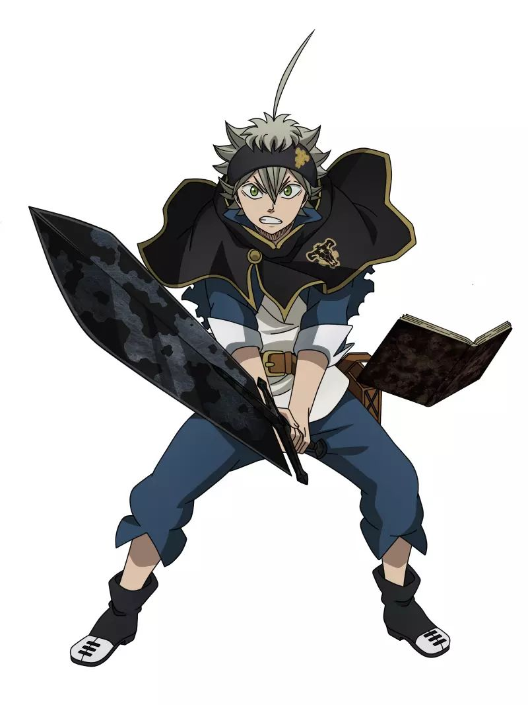
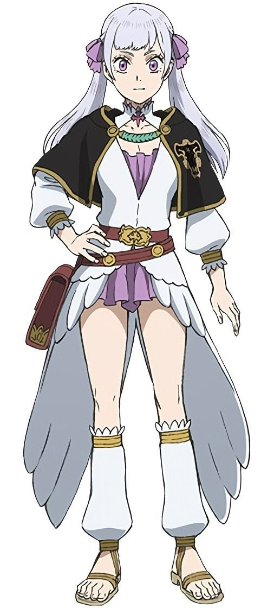
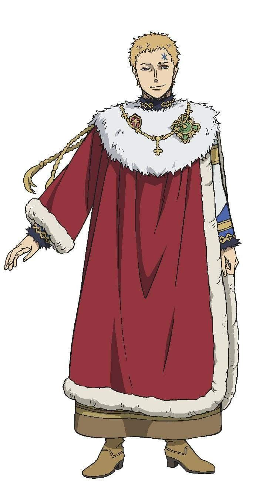

Personajes
Asta

Voz: Gakuto Kajiwara
- Orden mágica: Toros Negros
- Elemento mágico: Antimagia
Cándido, apasionado y positivo, Asta es de estatura baja, voz gruesa y reacciones exageradas. Un
jovencito
caracterizado por presentar un pelo de lobo ceniciento y ojos verdes. Porta un pañuelo negro con una
cruz
roja estilizada a forma de estrella bordada en el que, tiempo después, Vanessa borda la insignia de los
Toros Negros en el lado opuesto; lo lleva puesto en la cabeza a modo de bandana.
Quince años antes de los acontecimientos de la obra, lo abandonaron en las puertas de una capilla, por lo
que fue criado como huérfano junto a Yuno. Debido a la promesa de competición mágica que hizo con Yuno,
aspira a convertirse en el Rey Mago del Reino del Trébol. En un mundo mágico, es raro no tener magia.
Además de
no conocer su origen y que su cuerpo sea incompatible con la magia, siempre está a merced del desprecio
de
su entorno. Sin embargo, su naturaleza luchadora y su gran determinación para hacer frente a las
dificultades a las que se enfrenta influyen en el ánimo de los demás, lo cual es agradable para las
personas de su
entorno. Durante la ceremonia de premiación no consigue ningún libro mágico, pero cuando un ladrón ataca
a Yuno,
aparece el grimorio antimagia para neutralizar la del oponente como si reaccionara con
su propia
voluntad y preparación. Un trébol de cinco hojas estaba grabado en un libro mágico negro y ligeramente
sucio, de
cuyas páginas apareció una gran espada oscura, tan larga como la altura de Asta.
Compensa su incapacidad mágica con el entrenamiento diario para desarrollar su cuerpo, actualmente
resistente y con una gran capacidad física. Por esa razón, puede empuñar una gran espada como la de su
libro mágico
con poco esfuerzo. Además, su visión en movimiento y sus actos reflejos son excepcionales. Aunque se
dice
que su forma de luchar es muy imprudente, empezó a luchar con calma a partir de la enseñanza de
Fuegoleón, el capitan de la orden de los Leones Carmesí,
durante un ataque al reino. Con su magia demoníaca, sus oponentes no pueden detectarlo, por lo que a
veces hace
ataques sorpresa. Con la guía de Yami en la batalla de la caverna de Nairn, usa el Ki para
predecir los movimientos de su oponente y superar la desventaja y atacar con su magia imperceptible. A
diferencia
de otros portadores de demonios, Asta pudo realizar un pacto de amistad con el demonio Liebe, quien es
el
que le otorgó el poder de la antimagia.
Yuno
Voz: Nobunaga Shimazaki
- Orden mágica: Amanecer Dorado
- Elemento mágico: Viento
Rival de Asta, fue abandonado en la iglesia el mismo día que él. Es alto, tiene un cabello simétrico con
ojos sepia, cejas refinadas y su actitud calma siempre deja una buena impresión. Lleva un colgante al
cuello. Es el portador del grimorio de trébol de cuatro hojas y un miembro del escuadrón
Amanecer Dorado
(escuadrón al que eligió tras intentar ser reclutado por todos los otros escuadrones). Usa la magia
basada
en el viento y es el compañero elegido de Sylph, una de los cuatro atributos elementales, la cual se
enamora
de él. Su actitud seria surgió cuando Asta resultó herido al defenderlo cuando era un niño. Cuando un
aldeano le
arrebató el colgante a Yuno y lo estaba intimidando, Asta saltó y luchó contra él. Yuno solo pudo
quedarse
mirando cómo Asta lo salvó, a pesar de no tener magia, lo que le hizo sentir vergüenza. Para
compensarlo, se
entrenó para convertirse en su igual, en un sentido moral. Su fresco comportamiento solo se rompe cuando
se
está divirtiendo, generalmente cuando lucha contra alguien fuerte o ve a Asta demostrando su fuerza. Ha
demostrado ser una estrella en
ascenso entre las filas de Amanecer Dorado, capaz de vencer incluso a los magos más fuertes con poco o
ningún esfuerzo, llegando a ser su vicecapitán. Durante el ataque de la tríada oscura, Yuno descubre que
es
miembro de la familia real del Reino de la Pica.
Noelle Silva

Voz: Kana Yūki
- Orden mágica: Toros Negros
- Elemento mágico: Agua
Miembro del escuadrón Toros Negros y la cuarta hija de la casa Silva. Ella usa magia de
agua increíblemente
poderosa, pero no puede controlarla, lo que provocó su desaprobación por parte de su familia en parte,
ya
que también era repudiada por la muerte de su madre durante su nacimiento. Para hacer frente a su magia
incontrolable, usa un objeto para ajustar su magia. Más tarde se revela que ella inconscientemente desea
no
lastimar a nadie, por lo que su magia siempre falla, pero ha comenzado a romper esa barrera por el bien
de
proteger a sus amigos. Era constantemente intimidada por sus hermanos, que se burlaban de su incapacidad
para controlar su poder. A pesar de ello, Noelle lo supera y se gana el respeto de su familia, en
especial
de su hermano mayor Nozel. Asta es un pilar importante en el manejo de su magia, dándole apoyo
emocional.
Por este motivo, Noelle tiene un afecto especial para él aunque no quiera reconocerlo, ya que
involuntariamente lo cuida de sus peleas y excesos en el entrenamiento, y lo cela si una mujer se le
acerca.
Yami Sukehiro
Voz: Junichi Suwabe
- Orden mágica: Toros Negros
- Elemento mágico: Oscuridad
Apodado el Dios de la Destrucción , es el capitán de los Toros Negros. No es del Reino del Trébol, sino
de la
Tierra del Sol Naciente (el país Hino). Físicamente es muy fuerte, por lo que usa su magia
encantando su
espada. Puede ser bastante irritable, pero se preocupa profundamente por sus caballeros. Utiliza magia
de
oscuridad, que se considera la opuesto directa a la magia de luz. Así como la magia de la luz es rápida,
la
magia de la Oscuridad es lenta, y por esta razón, generalmente encanta su espada para usar su magia, con
la
cual puede blandirla con movimientos rápidos.
Julius Novachrono

Voz: Toshiyuki Morikawa
- Orden mágica: Ninguna (Rey Mago)
- Elemento mágico: Tiempo
Rey Mago actual del Reino del Trébol. En el ámbito militar, poseía la misma autoridad que el rey. Un
hombre
franco, con una manía por la magia sin igual, consecuencia de ello poseía un vasto conocimiento sobre
ella.
A menudo vagaba por la ciudad del castillo con magia de transformación. Además, tenía conocimiento sobre
Sylph, la espíritu que residía en Yuno. Pensando que las posibilidades de las personas son infinitas,
observaba que los nobles siempre eran arrogantes y no dejaban surgir a talentosos magos plebeyos. Para
hacer
un mundo sin discriminación, juntó logros y se convirtió en Rey Mago. Inventó el sistema de calificación
de
estrellas. Al ser usuario de la magia de tiempo, vencia a oponentes instantáneamente acelerando
rápidamente
el tiempo. Además, podía acelerar el tiempo en los alrededores creando zonas de maná, detectar ataques
futuros y leerlos. Al igual que otros magos, sus habilidades físicas eran similares y no podía blandir
la
espada antimagia de Asta.
Mientras los caballeros reales combatían contra Ojo de la Noche Blanca, él se reunió con el capitán del
Amanecer dorado, Willian Vangeance, que reveló que poseía el alma del elfo Patry (quien ese momento se
hacía
pasar por el jefe elfo Licht), y le encargó combatir contra él, la otra alma que poseía. A pesar de su
abrumador poder en batalla, Licht atacó masivamente a los ciudadanos del reino, utilizando todo su
tiempo
juntado y su poder mágico para salvar las vidas de todos, pero terminó herido de muerte. Con su último
aliento, instó a Yami a seguir luchando. Sin embargo, reaparece con una apariencia de joven de 13 años
tras
la guerra con el Demonio, debido a que acumuló tiempo en forma de magia dentro de un artefacto creado
por el
primer Rey Mago.